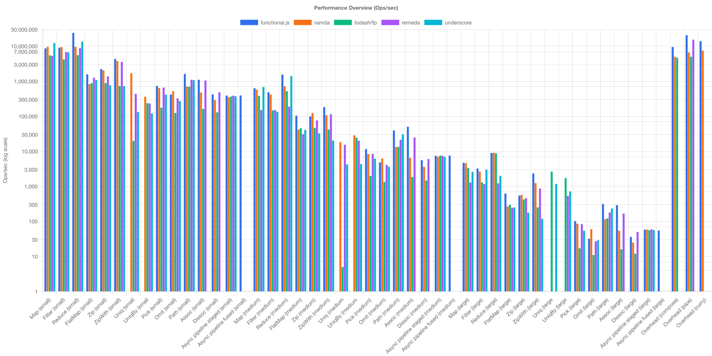
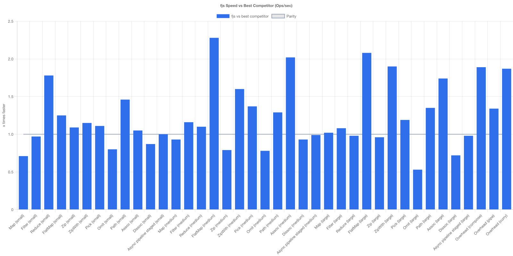
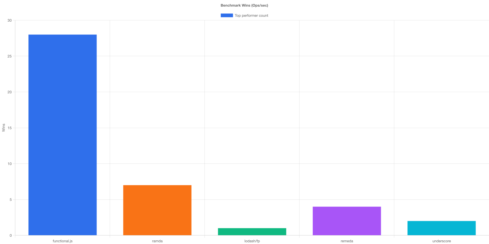
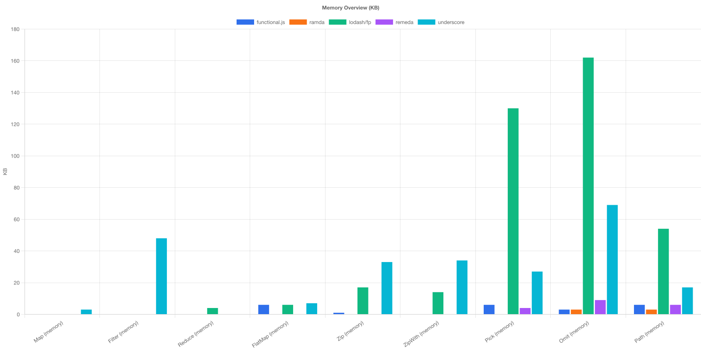
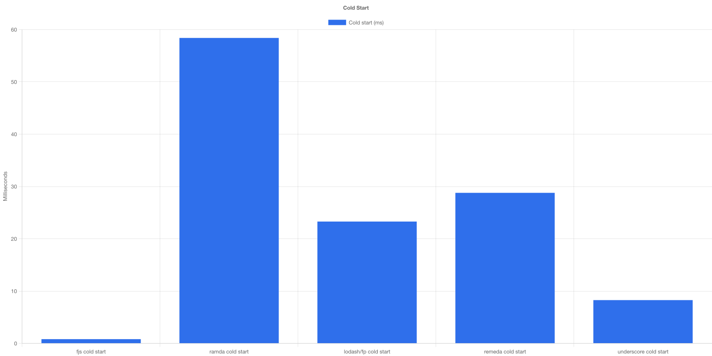

Why functional.js?
Lightweight
Just ~3KB gzipped with excellent tree-shaking support. Ship less JavaScript to your users.
TypeScript-first
Built with TypeScript for TypeScript. Enjoy excellent type inference and autocomplete.
Auto-curried
All functions are automatically curried for point-free programming and composition.
Zero dependencies
No bloat, no supply chain risks. Just pure functional programming utilities.
Tree-shakeable
Modern ESM with excellent tree-shaking. Import only what you need.
Fully tested
100% code coverage with comprehensive test suite. Battle-tested and reliable.
Examples
Using pipe for data transformation
import { pipe, map, filter, reduce } from "functional.js";
const data = [1, 2, 3, 4, 5, 6];
const result = pipe(
data,
filter(x => x % 2 === 0),
map(x => x * 2),
reduce((acc, x) => acc + x)
);
// result: 24Building reusable pipelines with flow
import { flow, map, filter } from "functional.js";
interface User {
name: string;
age: number;
active: boolean;
}
const getActiveUserNames = flow(
filter<User>(u => u.active),
map(u => u.name.toUpperCase())
);
const users: User[] = [
{ name: "Alice", age: 30, active: true },
{ name: "Bob", age: 25, active: false },
{ name: "Charlie", age: 35, active: true }
];
getActiveUserNames(users);
// ["ALICE", "CHARLIE"]Currying custom functions
import { curry } from "functional.js";
const add = curry((a: number, b: number) => a + b);
add(1, 2); // 3
add(1)(2); // 3
const add5 = add(5);
add5(10); // 15Performance
Benchmarks run on Node.js 24.13.0 (macOS), using small/medium/large scenarios with isolated processes, warmups, and median results.

Performance overview across different operations

functional.js speed ratio compared to competitors

functional.js leads in 31 of 45 benchmarks

Memory efficiency comparison

Cold start performance comparison
Comparison
| Library | Bundle Size | TypeScript | Auto-Curry | Notes |
|---|---|---|---|---|
| functional.js | ~3KB | Strong | ✓ | Data-last, zero dependencies |
| Ramda | ~50KB | Limited | ✓ | Data-last, large API |
| lodash/fp | ~24KB | Good | ✓ | Data-last wrappers over lodash |
| underscore | ~17KB | Limited | ✗ | Data-first utilities |
| fp-ts | ~15KB | Strong | ✗ | Types-first, higher learning curve |
Ready to get started?
Install functional.js and start writing better functional code today.